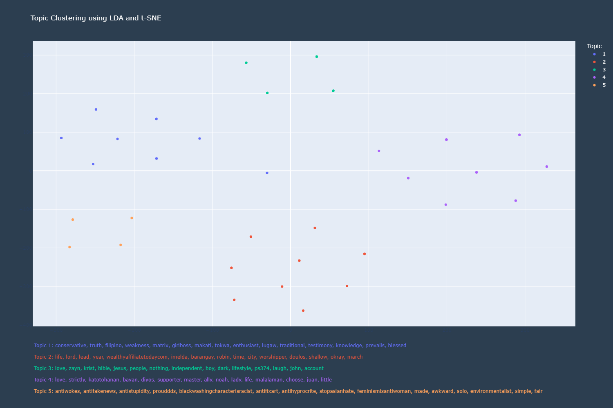
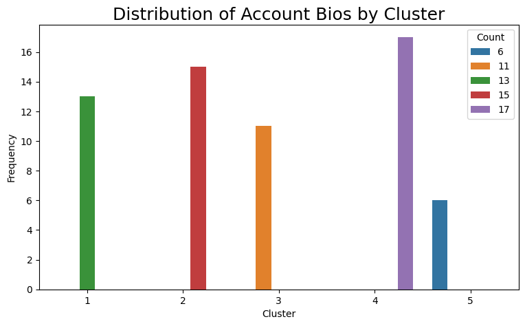

Topic Modelling
Topic Modelling is a statistical modelling technicque which makes use of unsupervised Machine Learning to idnetify thematic patterns from a collection of words or phrases from texts.
The researchers employed Topic Modelling on the Account Biographies to observe whether these biographies exhibit themes or topics relating to specific religions.

The researchers have set the Topic Model to group the biographies into 5 topics.
By grouping these biogrpahies, we can gain insight on the self-perceptions and associations of the Twitter users, as account biogprahies can serve as their personal descriptions.
-
Topic 1
contains the keywords conservative, filipino, traditional, blessed, which would suggest words that would describe their self Cultural Identity
-
Topic 2
contains the keywords life, lord, lead, worshipper, which may suggest words that would describe their roles.
-
Topic 3
contains the keywords love, krist, bible, jesus, people, ps374, john, which strongly suggest these pertain to the users' faith, with keywords referring to the Christian Religion along with bible verses and chapters.
-
Topic 4
contains the keywords love, katotohanan, bayan, diyos, which could refer to their passion to love, truth, country, Jesus, and the like.
-
Topic 5
contains the keywords antiwokes, antifakenews, antisupidity, prouddds,feministisantiwoman, which can be grouped as their advocacies which alarmingly suggest hate speech.
It is important to note that despite being grouped into different topics, 4 out of 5 topics contain a keyword pertaining to Christianity suggesting its prominence in how these Twitter Users describe themselves.
Chi-Square Test
To verify whether the resulting topic modelling have significant association between topic and religious affiliations, a chi-square test is performed. This test will assess the independence between the resulting topics.
Reiterating the null and alternate hypothesis:
Null hypothesis: There is NO association between the topics and religious affiliations.
Alternate hypothesis: There is STRONG association between the topics and religious affiliations.

The result from the test is the p-value which will be the basis for accepting or rejecting the hypothesis. A p-value of less than the significance level of 0.05 would provide the evidence to reject the null hypothesis.
Statistical Analysis Result
Prior to performing the Chi-Square test, Shapiro-Wilk and Anderson-Darling tests were performed to verify normal distribution among the topics. The results from both tests indicated that the topics were found to be normally distributed.
The results from the Chi-Square test returned a Test Statistic of 248, P-value of 1.33e-43, Degrees of Freedom of 16.
The extremely small P-value would provide the evidence to reject the null hypothesis. This is further supported by the large test statistic which also indicates deviation from the null hypothesis.
Given this, Topic 4 is the cluster with a higher number of tweets compared to the other topics.
Thus, Twitter accounts who post mis/disinformation about the SOGIE Bill commonly have the theme of passion in their profile bios.